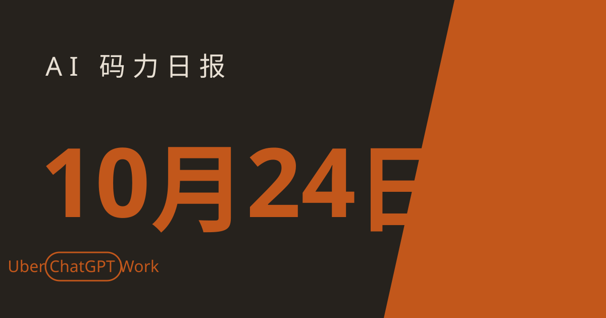

AI 码力日报 · 2026年10月24日

⚡ 一句话速览
- Uber 给 3 万员工全员上 ChatGPT Work：工程团队继续用 Codex 写代码，全员 AI 办公这事正在从试点变标配。
- Claude 红队翻了 25 个开源项目：500 多万行代码里找出 493 个可达攻击面问题，OpenSSH 默认配置的暴露面直接砍掉约五分之一。
- Google 收紧 Gemini 模型选择权：免费用户 10 月 9 日起只剩 Flash-Lite 可选，Plus 用户 11 月 13 日起也将失去 Pro 模型选择权——想用 Pro 得上 $19.99 的 AI Pro。
- Kimi K3.1 与 Qwen4 双双现身 Arena 匿名测试：两家下一代旗舰都在盲测阶段，正式发布可能就在本周。
🤖 今日 AI Coding 动态
Uber 3 万员工全员上 ChatGPT Work，工程团队继续用 Codex
跟你有啥关系：大厂 AI 办公的标配正在成型——ChatGPT Work 管全员日常，Codex 管工程代码，分工越来越清楚。10 月 23 日 Uber 宣布把 ChatGPT Work 推给全球 3 万名员工，配套员工培训、已批准的集成清单和内部 AI 技能库；开发与软件工程团队则继续用 Codex 处理编码工作流。这是 Uber 与 OpenAI 已有合作的扩大，官方称后续会再公布员工采纳情况和实际效果。我觉得值得注意的不是人数，而是这个分工：通用办公 agent 和编码 agent 分开买、分开管，以后你给团队选型时也可以照这个思路拆——别指望一个工具全包。原文链接
Claude 红队翻了 25 个开源项目：493 个问题，OpenSSH 暴露面砍掉约五分之一
跟你有啥关系：你依赖的开源项目可能正被这种方式审计——Claude 这次找的不是已确认漏洞，而是"攻击者能碰到、但部署根本不需要暴露"的代码。Anthropic 边界红队 10 月 20 日发文称，Claude 分析了 25 个开源项目、500 多万行 C、C++、Java、PHP 和 Python 代码，盘出 17000 多个配置项（其中 3842 个与安全相关），标记 493 个攻击面问题：162 组有风险的配置组合里，94 组会悄悄关掉某个安全控制；11 个带登录门槛的项目全都有无需登录即可触达的代码；还有一组互相冲突的配置项已经存在了 21 年，能让本应只接受持证客户端的服务器接受任何人。OpenSSH 的修复直接移除了默认构建中约五分之一的未认证可达代码。这些大多不是已确认的可利用漏洞，价值在于把未知漏洞的藏身之处先收窄——做开源维护或安全审计的人，可以照这个"攻击面收缩"的思路给自己的项目先盘一遍。原文链接
Google 收紧 Gemini 模型选择权：免费档只剩 Flash-Lite，Plus 用户 11 月 13 日起失去 Pro
跟你有啥关系：如果你在免费档或 $4.99 的 AI Plus 上用 Gemini，这个月起你能选的模型正在变少。10 月 9 日起，没有 Google AI 订阅的个人用户在 Gemini 应用和网页端失去了 Flash 和 Pro 模型选择权，只能用 Flash-Lite；Plus 订阅者也收到邮件，称从 11 月 13 日起（具体日期因账号而异），Pro 模型选择权将只留给 AI Pro（$19.99 / 月）及以上订阅者，Plus 用户将保留 Flash-Lite 和 Flash。已有的 Pro 模型对话可以换模型继续，不会直接消失。我的看法很直接：Google 这是在用模型选择权给订阅分层——免费档够快够用，但复杂任务想上 Pro 就得加钱；还没到 11 月 13 日的 Plus 用户，这两周可以先把手头依赖 Pro 的流程测一遍 Flash 的表现，别等切换那天才发现差距。原文链接
Kimi K3.1 与 Qwen4 双双现身 Arena 匿名测试，发布可能就在本周
跟你有啥关系：国产下一代旗舰的发布窗口正在打开——现在是盯着 Arena 榜单和官方公告的最好时机。10 月 23 日消息称，Moonshot 的 Kimi K3.1 与阿里的 Qwen4 已进入 Arena 匿名测试，代号分别为 Kibitz（据分析与 Kimi 的分词器特征相符）和 Kalmia（据分析来自 Qwen），两队近日都密集跑了基准测试；阿里已在 9 月云栖大会上预告 Qwen4 家族（Max、Flash、Plus 以及一个 27B 本地模型），Kimi K3 则是 2.8 万亿参数、100 万 token 上下文的开源权重模型。提醒一句：Kimi K3 此前受算力限制，速度和订阅额度一直是短板，K3.1 发布时除了跑分，更值得盯的是价格和可用额度——模型强但排不上队，等于没法用。原文链接
数据说话：Claude Code 职场使用率 39%，已反超 Copilot 的 21%
跟你有啥关系：选编码工具别只看名气——JetBrains 的开发者调查显示，职场里的实际使用格局今年已经翻了个个。JetBrains 2026 年 5–7 月开发者生态调查（15000 多名开发者）显示，职场中定期使用 Claude Code 的比例从 1 月的 18% 涨到 39%，GitHub Copilot 从 29% 掉到 21%，Cursor 从 18% 掉到 12%，OpenAI Codex 从 3% 涨到 16%，Google Antigravity 维持 6%；90% 的职业开发者每周至少用一次 AI 编码 agent，68% 每天都用。Stack Overflow 2026 调查（10 月发布）里也有呼应：Cursor 过去一年定期使用率 14.9%，Windsurf 3.2%。数字来自问卷调查、不是装机量，别当成市场份额实锤；但趋势很清楚——CLI agent 正在吃掉编辑器插件的份额，下一份工具选型，先试 CLI 再决定。原文链接
🐑 今日羊毛
ChatGPT Plus 学生 4 个月免费：美国大学生，10 月 31 日截止
一句话：美国在读大学生可领 4 个月 ChatGPT Plus，按 $20 / 月算约省 $80，月底就截止。
- 怎么薅：用学校邮箱完成学生身份验证后领取 Plus 权益，领之前先确认自己的学校在覆盖名单里。直达链接
- 有效期：截至 10 月 31 日（截至撰写时），过期不候；到期后记得及时取消，避免自动续费
- 适合谁：美国高校在读学生；国内学生不在覆盖范围，别白跑一趟
Google AI 学生免费一年：18 岁以上大学生，12 月 31 日前兑换
一句话：Google 给 18 岁以上大学生一年免费 AI 订阅，美国是 AI Pro、140 多个其他市场是 AI Plus，年底前兑换。
- 怎么薅：用学生身份验证后兑换，兑换时看清自己所在市场给的是 Pro 还是 Plus，两档权益差不少。直达链接
- 有效期：截至 12 月 31 日（截至撰写时），过期不候
- 适合谁：18 岁以上在读大学生；已有付费订阅的先算好叠加规则再领，别重复花钱
Gemini CLI：Google 账号登录，每天 1000 次模型请求
一句话：Gemini CLI 用 Google 账号登录就有每天 1000 次模型请求的免费量，写代码、跑 agent 够轻度日常用。
- 怎么薅：装 Gemini CLI 后用 Google 账号登录即可，不用绑卡；额度按天算，重度使用会先触顶，适合当主力之外的备用通道。直达链接
- 有效期：长期免费层（截至撰写时），按天重置
- 适合谁：想零成本跑 CLI agent、或给付费工具找个免费备胎的人
⭐ 今日 GitHub 热门项目
morluto/rea：让 agent 在没有源码的情况下把软件逆向明白
一句话介绍。解决什么问题：想让 agent 搞懂一个软件的功能，但手头没有源码——rea 让 agent 直接检查原生二进制（经 Hopper 或 Ghidra）、JavaScript / Electron 应用、.NET 程序集和网站，再带着证据和局限性讲清楚某个功能是怎么实现的，分析全程在本地跑。⭐ 约 18 万（10 月中旬第三方盘点数据），10 月 21 日单日新增约 9400 star。适合：做竞品分析、接手老系统、给 agent 配逆向能力的人；注意它给的是"功能如何实现"的解释，不是源码复原，别拿它干越界的事。项目地址
cloudflare/security-audit-skill：给编码 agent 配的多阶段安全审计 skill
一句话介绍。解决什么问题：让 agent 做安全审计时结论各说各话、没法复核——这个 Cloudflare 的 skill 把审计拆成多个阶段，产出可独立验证、机器可读的结论，审计结果能直接进流程复核。今日登上 GitHub Trending 日榜（截至撰写时）。适合：想把安全审计交给 agent、又要求结论可验证的团队。项目地址
anthropics/knowledge-work-plugins：Anthropic 官方的知识工作者插件库
一句话介绍。解决什么问题：Claude Cowork 想用在知识工作上却缺现成插件——这是 Anthropic 官方的开源插件库，面向知识工作者设计，直接给 Cowork 配好开箱即用的工作流。今日登上 GitHub Trending 日榜（截至撰写时）。适合：已经在用 Claude Cowork 处理文档、研究类工作的读者。项目地址
🛠️ 值得一试的工具：FreeLLMAPI
是什么：一个跑在你自己电脑上的免费模型路由器，把 34 家 AI 提供商的免费层拼到一个地址后面，Claude Code、Codex、Gemini CLI 指过去就能跑免费模型；官方说法是合计每月约 74 亿免费 token。
解决什么痛点：每个免费层都要单独注册、单独配 key、单独算额度——FreeLLMAPI 一次接好，agent 里一条命令装完，还会给你一个独立的免费命令（如 claude-free），不碰你原来的配置。代价也得说清楚：免费层就是免费层的样子，最强的免费模型日限额最小，越到当天晚些时候答案越可能降档、午夜 UTC 重置。
免费额度：本身开源免费，额度来自你接入的各家免费 key（建议先接 Google AI Studio、Groq、Cerebras、OpenRouter 这四个）。
verdict： 值得试——对"主力付费、免费档当备胎"的人来说，这是一个安装位就能换来的免费模型池；但免费端点只放自己本机、别往公网暴露，敏感项目上付费 API 之前别拿它当主力。
🎓 3 分钟小教程：3 分钟开通 GitHub Copilot Free，零成本先跑起来
前置条件：一个 GitHub 账号、VS Code（或其他支持 Copilot 的编辑器），不用绑卡。
- 打开 GitHub 个人设置里的 Copilot 页面，选 Free 档开通——免费档每月 2000 次代码补全、50 次聊天请求，按月重置。
- 在编辑器里装 GitHub Copilot 扩展，用同一个账号登录。
- 新建一个文件，随手写个函数签名停一下，看补全是否出现；再打开聊天面板问一个你手头正在改的小问题，确认聊天额度在走。
预期效果：补全和聊天都通了，全程零成本；免费档用的是自动选模型、不能自选具体模型——额度用完就等下月重置，或者到那时再决定要不要上 Pro（$10 / 月）。
数据截至撰写时，仅供参考。